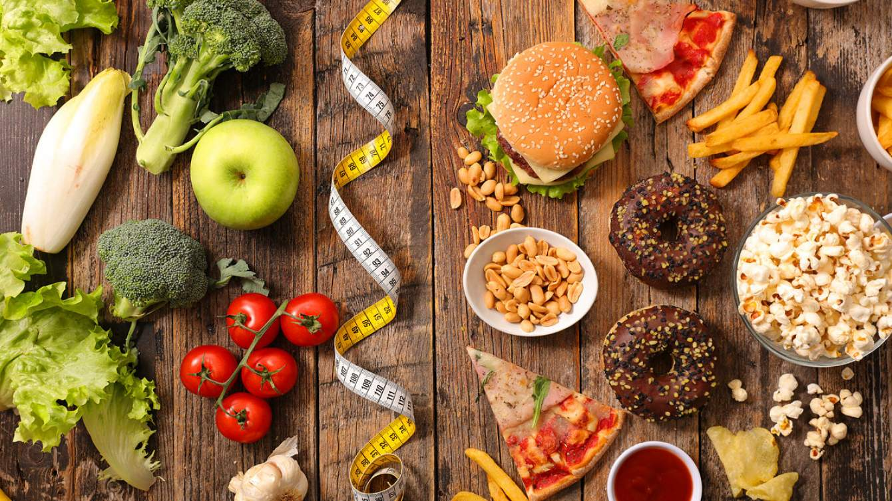

Здоровые продукты питания
Мы попробуем ответить на извечный вопрос «что съесть, чтобы похудеть?». Главное при составлении меню для здорового питания – соблюдение баланса между расходами и потребляемыми продуктами.

Полезно знать!
«Здоровое питание» – как много в этой фразе для сердца женского слилось… В действительности, правильно питаться несложно, если делать это со вкусом и удовольствием, не изнуряя свой организм монодиетами. Подойдите к выработке новой здоровой привычки легко, как к увлекательному приключению, в завершении которого вам достанется драгоценный приз – отличная фигура и прекрасное самочувствие.
Злаки, в виде каш и мюсли, богатые медленными углеводами, которые обеспечат наш организм энергией; Свежие овощи (капуста, морковь) обеспечивают организм пищевыми волокнами – клетчаткой; Бобовые – богатый источник растительного белка, особенно необходим тем, кто редко или вовсе не употребляет мясо; Орехи, особенно грецкий и миндаль, благотворно влияют на весь организм и являются источником полиненасыщенных жирных кислот омега-6 и омега-3, микроэлементов; Кисломолочные продукты: натуральные йогурты (без добавления сахара), кефир, обезжиренный творог обеспечивают кальцием и улучшают работу ЖКТ; Морская рыба содержит белок и незаменимые жирные кислоты омега-3; Фрукты и ягоды – кладезь витаминов, оздоравливают кожу и защищают организм от заболеваний; Нежирное мясо – куриная грудка, крольчатина, говядина – источник белка.
Из напитков рекомендуется употреблять минеральную воду, цикорий, смузи, зеленый чай и натуральные свежевыжатые соки, лучше овощные.
Полезные продукты не должны иметь в составе консервантов, искусственных красителей, пальмового масла. Соленья лучше ограничивать – можно побаловать себя ими время от времени, но увлекаться не стоит. Если у вас есть проблема лишнего веса, то от сахара стоит отказаться вовсе, даже если вы сладкоежка и никак не можете без чашечки сладкого кофе по утрам – сахарозаменители решат эту проблему. Не стоит их бояться, качественные заменители на натуральной основе безвредны, практически не содержат калорий и приятны на вкус.
С полезными продуктами мы определились, давайте посмотрим на список еды, которая несовместима со здоровым образом жизни и правильным питанием: Сладкие газированные напитки. Они не утоляют жажду, раздражают слизистую желудка, как правило, содержат чудовищное количество сахара – около 20 г в каждом стакане, искусственных красителей и ароматизаторов, консервантов. Еда, жаренная во фритюре. Картошка фри, чипсы, сухарики и все, что жарится в большом количестве масла, должно быть вычеркнуто из рациона. Канцерогены, отсутствие полезных веществ и жир – не то, что нужно здоровому организму. Бургеры, хот-доги.
Все подобные блюда содержат смесь из белого хлеба, жирных соусов, непонятного происхождения мяса, разжигающих аппетит приправ и большого количества соли. Что мы получаем в результате? Настоящую калорийную «бомбу», которая мгновенно превращается в складки на теле и не несет никакой пищевой ценности. Майонез и аналогичные соусы. Во-первых, они полностью скрывают натуральный вкус еды под специями и добавками, заставляя съедать больше, во-вторых, почти все майонезные соусы из магазина – почти чистый жир, щедро приправленный консервантами, ароматизаторами, стабилизаторами и другими вредными веществами.
Колбасы, сосиски и мясные полуфабрикаты. В этом пункте вряд ли нужны какие-либо разъяснения – достаточно почитать этикетку продукта. И это только официальные данные! Помните, что под пунктами «свинина, говядина» в составе чаще всего скрываются шкура, хрящи, жир, которые вы бы вряд ли стали есть, не будь они столь умело обработаны и красиво упакованы. Энергетические напитки. Содержат ударную дозу кофеина в сочетании с сахаром и повышенной кислотностью, плюс консерванты, красители и много других компонентов, которых стоит избегать.
Обеды быстрого приготовления. Лапша, пюре и аналогичные смеси, которые достаточно залить кипятком, вместо питательных веществ содержат большое количество углеводов, соли, специй, усилителей вкуса и других химических добавок. Мучное и сладкое. Да-да, любимые нами сладости – одни из самых опасных продуктов. Проблема не только в большой калорийности: сочетание мучного, сладкого и жирного умножает вред в несколько раз и мгновенно сказывается на фигуре. Пакетированные соки. Витамины и другие полезные вещества практически полностью исчезают в процессе обработки. Какая польза может быть от концентрата, разведенного водой и сдобренного изрядным количеством сахара?
Алкоголь. О вреде его для организма сказано уже достаточно, мы лишь в очередной раз отметим, что алкоголь содержит калории, повышает аппетит, мешает усвоению полезных веществ, а при несоблюдении минимальных доз – медленно разрушает организм, ведь этанол является клеточным ядом.
Из напитков рекомендуется употреблять минеральную воду, цикорий, смузи, зеленый чай и натуральные свежевыжатые соки, лучше овощные.
Полезные продукты не должны иметь в составе консервантов, искусственных красителей, пальмового масла. Соленья лучше ограничивать – можно побаловать себя ими время от времени, но увлекаться не стоит. Если у вас есть проблема лишнего веса, то от сахара стоит отказаться вовсе, даже если вы сладкоежка и никак не можете без чашечки сладкого кофе по утрам – сахарозаменители решат эту проблему. Не стоит их бояться, качественные заменители на натуральной основе безвредны, практически не содержат калорий и приятны на вкус.
Под строгим запретом!
С полезными продуктами мы определились, давайте посмотрим на список еды, которая несовместима со здоровым образом жизни и правильным питанием: Сладкие газированные напитки. Они не утоляют жажду, раздражают слизистую желудка, как правило, содержат чудовищное количество сахара – около 20 г в каждом стакане, искусственных красителей и ароматизаторов, консервантов. Еда, жаренная во фритюре. Картошка фри, чипсы, сухарики и все, что жарится в большом количестве масла, должно быть вычеркнуто из рациона. Канцерогены, отсутствие полезных веществ и жир – не то, что нужно здоровому организму. Бургеры, хот-доги.
Все подобные блюда содержат смесь из белого хлеба, жирных соусов, непонятного происхождения мяса, разжигающих аппетит приправ и большого количества соли. Что мы получаем в результате? Настоящую калорийную «бомбу», которая мгновенно превращается в складки на теле и не несет никакой пищевой ценности. Майонез и аналогичные соусы. Во-первых, они полностью скрывают натуральный вкус еды под специями и добавками, заставляя съедать больше, во-вторых, почти все майонезные соусы из магазина – почти чистый жир, щедро приправленный консервантами, ароматизаторами, стабилизаторами и другими вредными веществами.
Колбасы, сосиски и мясные полуфабрикаты. В этом пункте вряд ли нужны какие-либо разъяснения – достаточно почитать этикетку продукта. И это только официальные данные! Помните, что под пунктами «свинина, говядина» в составе чаще всего скрываются шкура, хрящи, жир, которые вы бы вряд ли стали есть, не будь они столь умело обработаны и красиво упакованы. Энергетические напитки. Содержат ударную дозу кофеина в сочетании с сахаром и повышенной кислотностью, плюс консерванты, красители и много других компонентов, которых стоит избегать.
Обеды быстрого приготовления. Лапша, пюре и аналогичные смеси, которые достаточно залить кипятком, вместо питательных веществ содержат большое количество углеводов, соли, специй, усилителей вкуса и других химических добавок. Мучное и сладкое. Да-да, любимые нами сладости – одни из самых опасных продуктов. Проблема не только в большой калорийности: сочетание мучного, сладкого и жирного умножает вред в несколько раз и мгновенно сказывается на фигуре. Пакетированные соки. Витамины и другие полезные вещества практически полностью исчезают в процессе обработки. Какая польза может быть от концентрата, разведенного водой и сдобренного изрядным количеством сахара?
Алкоголь. О вреде его для организма сказано уже достаточно, мы лишь в очередной раз отметим, что алкоголь содержит калории, повышает аппетит, мешает усвоению полезных веществ, а при несоблюдении минимальных доз – медленно разрушает организм, ведь этанол является клеточным ядом.